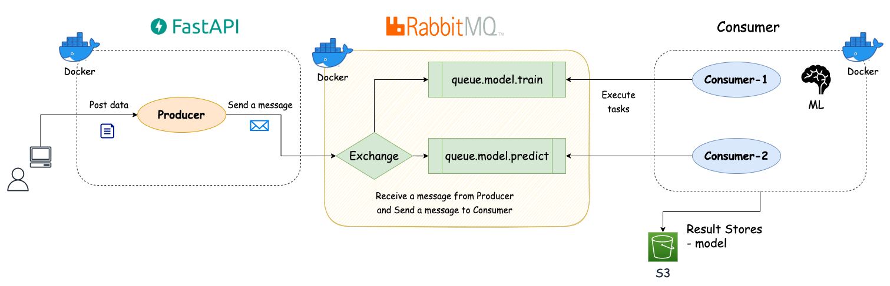
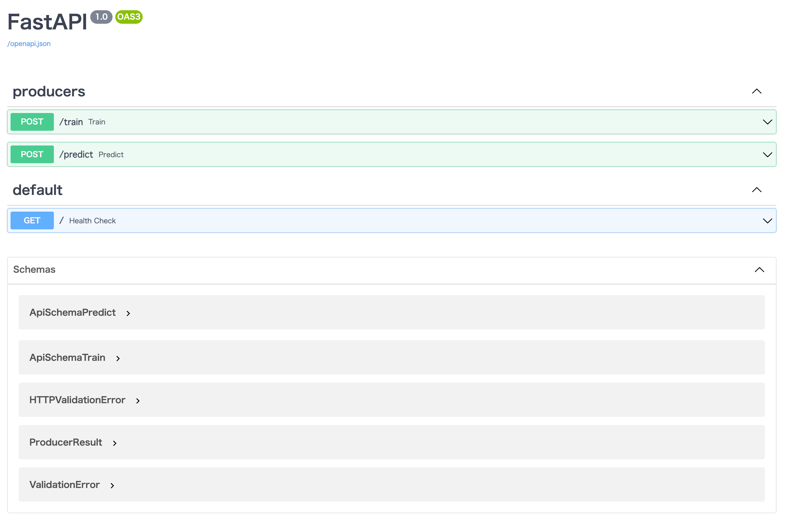
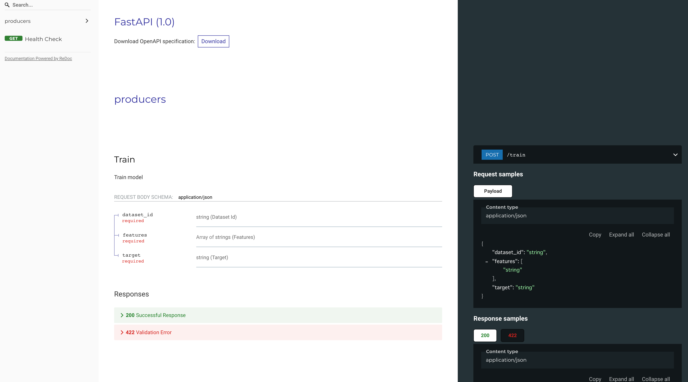

はじめに
最近，機械学習を使ったアプリケーションのバックエンドでどういった処理を行ってモデル作成などを行っているか気になったので，モデル作成時によく行われる非同期処理を FastAPI と RabbitMQ を用いて検証したお話になります．
機械学習のようなモデル作成に時間がかかる場合，モデル作成を行うリクエストに対して，その情報を受け取ったというレスポンスだけを先に返し，実際の処理は非同期で行われることが多いと思います．この処理を RabbitMQ という OSS の message queuing service を用いて実施した紹介になります．
あと個人的に RPC (Remote Procedure Call) や Publish/Subscribe の仕組みを理解したいという気持ちもありました．
以下のリポジトリにソースコードなどを置いてあります．
概要として，以下のような流れで処理を見ていきました．
- FastAPI に json 形式でリクエストを POST する（モデル作成するためのメッセージ情報）
/trainというエンドポイントにまずはデータをPOSTする- モデルの学習が行われモデルを S3 に保存する
- モデルの作成が完了したら，次に
/predictというエンドポイントにデータをPOSTする - 学習済みのモデルを S3 からロードし，POST されたデータに対して予測確率を返す
Message Queuing Serviceとは？
メッセージキューは Producer と呼ばれるクライアントアプリケーションが作成したメッセージを受け取り，メッセージが溜まっていく仕組みです．Producer 側から見ると，メッセージキューにメッセージを配信します．このメッセージを処理する役割として，Consumer (Worker) と呼ばれる別のアプリケーションがあり，Consumer は Queue に接続し，処理するメッセージを受信します．処理し終わったら，返信用のメッセージをクライアント側に送信することもできます．（Queue に入れられたメッセージは，Consumer が取り出すまで保存されます）
また，メッセージキューには Exchange と呼ばれる機能があり，どのメッセージをどのように送るかを設定する機能もあります．（厳密には，Producer は直接 Queue に送信するのではなく，Exchange に送信することになります）
実際にこのメッセージキューの役割を担うものを Broker と呼んだりします．サービスとして RabbitMQ や Redis などがあり，マネージドサービスでは Amazon Simple Queue Service (SQS) があります．
RabbitMQを使った実装
今回は RabbitMQ を使って実装しました．RabbitMQ は OSS の Message Broker で動作が速く軽量で，複数のメッセージングプロトコルをサポートしています．いくつかの言語で実装可能ですが，python で扱う場合には，pika というライブラリを使うことになります．
例えば，Celery のような分散タスクキューツールを使うことで非同期処理をより簡単に実装できますが，Celery 自体はメッセージキューを構築することはできないため，RabbitMQ や Redis のような Broker が必要になります．今回はこのあたりの pub/sub の仕組みを理解するために Celery は使わずに RabbitMQ の python ライブラリである pika を使って実装することにしました．
RabbitMQ は docker コンテナで立ち上げていて，definitions.json という定義ファイルを事前に用意することでそのスキーマに基づいて RabbitMQ を立ち上げることができます．このファイルはコンテナ起動時に読み込まれることになります．
definitions.json
{
"rabbit_version": "3.9.14",
"rabbitmq_version": "3.9.14",
"product_name": "RabbitMQ",
"product_version": "3.9.14",
"users": [
{
"name": "guest",
"password": "guest",
"hashing_algorithm": "rabbit_password_hashing_sha256",
"tags": "administrator",
"limits": {}
}
],
"vhosts": [{ "name": "/" }],
"permissions": [
{
"user": "guest",
"vhost": "/",
"configure": ".*",
"write": ".*",
"read": ".*"
}
],
"topic_permissions": [],
"parameters": [],
"global_parameters": [],
"policies": [],
"queues": [
{
"name": "queue.model.train",
"vhost": "/",
"durable": true,
"auto_delete": false,
"arguments": { "x-queue-type": "classic" }
},
{
"name": "queue.model.predict",
"vhost": "/",
"durable": true,
"auto_delete": false,
"arguments": { "x-queue-type": "classic" }
}
],
"exchanges": [],
"bindings": []
}
RabbitMQには丁寧なTutorialsがあるので，それを読むと理解が進むと思います！
システム構成
非同期処理を行うシステムの構成は図のようになります．Producer/Broker/Consumer とコンテナを3つ用意しています．
図の右下にある Result Stores はタスクの処理結果を保存するためのものになります．Result Stores には PostgreSQL や MySQL などのDBを使用することもできますし，Redis も使用することができます．Redis は Broker としても使用することができるので，両方を1つで担うことが可能です．今回はモデルを S3 に保存するだけとして，処理結果を DB に保存したりはしていないです．
- Producer: 機械学習タスクを行うためにメッセージをポストするコンテナ（=FastAPI）
- Broker: メッセージキューの役割を担うコンテナ（=RabbitMQ）
- Consumer: タスクを実際に実行するコンテナ
- Storage: モデルを保存するストレージ（=S3）

docker-compose.yml は以下のような構成になります．
docker-compose.yml
version: '3.8'
# Common definition
x-template: &template
volumes:
- ~/.gcp:/root/.gcp:cached
- ~/.aws:/root/.aws:cached
- ./app:/opt/program:cached
env_file:
- .env
environment:
TZ: Asia/Tokyo
LANG: 'ja_JP.UTF-8'
restart: always
tty: true
services:
producer:
# FastAPI for producer
container_name: producer
build:
context: .
ports:
- 5000:5000
command: ["uvicorn", "main:app", "--reload", "--host", "0.0.0.0", "--port", "5000", "--access-log"]
depends_on:
- rabbitmq
<<: *template
consumer:
container_name: consumer
hostname: consumer
build:
context: .
command: ["python3", "consumer/consumer.py", "--num_threads", "2"]
depends_on:
- rabbitmq
<<: *template
rabbitmq:
image: rabbitmq:3.9-management
container_name: rabbitmq
hostname: rabbitmq
restart: always
volumes:
# - ./app/rabbitmq/etc:/etc/rabbitmq/rabbitmq
- ./app/rabbitmq/etc/rabbitmq.conf:/etc/rabbitmq/rabbitmq.conf
- ./app/rabbitmq/etc/definitions.json:/etc/rabbitmq/definitions.json
- ./app/rabbitmq/data:/var/lib/rabbitmq
- ./app/rabbitmq/logs:/var/log/rabbitmq
- ~/.aws:/root/.aws:cached
ports:
# AMQP protocol port
- 5672:5672
# HTTP management UI
- 15672:15672
environment:
TZ: Asia/Tokyo
LANG: 'ja_JP.UTF-8'
env_file:
- .env
# networks:
# default:
# external:
# name: teamaya-network-async
今回のシステムのディレクトリ構成は以下になります．少し冗長な構成になっていますが，./app/producer と ./app/consumer 配下に Producer と Consumer の処理を行うスクリプトがあります．
.
├── Dockerfile
├── README.md
├── app
│ ├── consumer
│ │ ├── base.py
│ │ ├── consumer.py
│ │ └── tasks.py
│ ├── logger.py
│ ├── main.py
│ ├── producer
│ │ ├── base.py
│ │ ├── producer.py
│ │ └── schema.py
│ ├── rabbitmq
│ │ └── etc
│ │ ├── definitions.json
│ │ └── rabbitmq.conf
│ └── test
│ ├── __init__.py
│ ├── conftest.py
│ ├── data
│ │ └── test_diabetes.csv
│ └── unit
│ ├── __init__.py
│ └── test_tasks.py
├── docker-compose.yml
├── requirements.lock
└── requirements.txt
Producerの実装
それぞれのファイルの説明をしておくと，
base.py: RabbitMQ に接続するための初期化や Consumer にメッセージを送信するための処理を実装したファイルproducer.py:base.pyのクラスを継承して，個別のタスクに合わせて送信するメッセージの実行する API を実装したファイルschema.py: データの入出力のスキーマを定義したファイル- FastAPI では入出力を
Pydanticというライブラリを用いて Data validation を行います．型ヒントを利用するためのスキーマ定義になります
- FastAPI では入出力を
producer.py
import ast
import uuid
from fastapi import APIRouter
from logger import get_logger
from producer.base import BaseProducer, QueueNames, RepQueueNames
from producer.schema import ApiSchemaPredict, ApiSchemaTrain, ProducerResult
LOGGER = get_logger()
router = APIRouter(prefix='', tags=["producers"])
class ProducerTrain(BaseProducer):
def __init__(self, queue_name: QueueNames, rep_queue_name: RepQueueNames):
BaseProducer.__init__(self, queue_name, rep_queue_name)
def run(self, params: ApiSchemaTrain):
"""Run to send message to train consumer
Args:
params (ApiSchemaTrain): schema for train
"""
model_id = str(uuid.uuid4())
message = {
"model_id": model_id,
"dataset_id": params.dataset_id,
"features": params.features,
"target": params.target
}
# self.send_message_to_consumer(message)
LOGGER.info("Produce message for train.")
response = self.send_message_to_consumer(message)
response = ast.literal_eval(response.decode())
LOGGER.info(f"Reply Response from consumer: {response}")
return ProducerResult(message=response)
class ProducerPredict(BaseProducer):
def __init__(self, queue_name: QueueNames, rep_queue_name: RepQueueNames):
BaseProducer.__init__(self, queue_name, rep_queue_name)
def run(self, params: ApiSchemaPredict):
"""Run to send message to predict consumer
Args:
params (ApiSchemaPredict): schema for predict
"""
message = {
"model_id": params.model_id,
"dataset_id": params.dataset_id,
"input_data": params.input_data
}
LOGGER.info("Produce message for predict.")
response = self.send_message_to_consumer(message)
response = ast.literal_eval(response.decode())
LOGGER.info(f"Reply Response from consumer: {response}")
return ProducerResult(message=response)
@router.post("/train", response_model=ProducerResult, name="train")
async def train(params: ApiSchemaTrain) -> ProducerResult:
"""Train model"""
return ProducerTrain(queue_name='queue.model.train', rep_queue_name='queue.reply.train').run(params)
@router.post("/predict", response_model=ProducerResult, name="predict")
async def predict(params: ApiSchemaPredict) -> ProducerResult:
"""Predict model"""
return ProducerPredict(queue_name='queue.model.predict', rep_queue_name='queue.reply.predict').run(params)
ProducerTrain と ProducerPredict はタスク実行用のメッセージを送るキューの queue_name と Consumer 側からの返信用のキューである rep_queue_name の2つを引数に取ります．実際の学習や予測処理を行う部分は Consumer 側で実装しています．
base.py
import json
import os
import uuid
from typing import Literal
import pika
from logger import get_logger
LOGGER = get_logger()
# Possible values as queue name
QueueNames = Literal['queue.model.train', 'queue.model.predict']
RepQueueNames = Literal['queue.reply.train', 'queue.reply.predict']
class BaseProducer:
def __init__(self, queue_name: QueueNames, rep_queue_name: RepQueueNames):
self.queue_name = queue_name
self.rep_queue_name = rep_queue_name
self.pika_params = pika.ConnectionParameters(
host="rabbitmq",
port=os.getenv('RABBITMQ_PORT', 5672),
connection_attempts=10,
heartbeat=0
)
self.connection = pika.BlockingConnection(self.pika_params)
self.channel = self.connection.channel()
LOGGER.info('Pika connection initialized.')
result = self.channel.queue_declare(queue=self.rep_queue_name, exclusive=True)
self.callback_queue = result.method.queue
self.channel.basic_consume(queue=self.callback_queue, on_message_callback=self.on_response, auto_ack=True)
def on_response(self, ch, method, props, body):
if self.corr_id == props.correlation_id:
self.response = body
def run(self):
raise NotImplementedError()
def send_message_to_consumer(self, message: dict):
"""Send message
Args:
message (dict): message info
"""
self.response = None
self.corr_id = str(uuid.uuid4())
message_json = json.dumps(message)
self.channel.basic_publish(
exchange="",
routing_key=self.queue_name,
body=message_json,
properties=pika.BasicProperties(
content_type='application/json',
delivery_mode=2, # make message persistent
reply_to=self.callback_queue,
correlation_id=self.corr_id
)
)
LOGGER.info(f"Sent message. [q] '{self.queue_name}' [x] Body: {message_json=}")
while self.response is None:
self.connection.process_data_events()
self.close()
return self.response
def close(self):
self.channel.close()
self.connection.close()
-
__init__関数:- RabbitMQ のサーバーと接続するために
pika.BlockingConnection()でhost,portなどのパラメータを渡してインスタンス化を行う - Consumer からの Reply 用に rep_queue_name に指定したキュー名で callback_queue を作成
- basic_consume では subscribe するキューが存在すればそれを実行
- RabbitMQ のサーバーと接続するために
-
send_message_to_consumer関数:- メッセージを json.dump し，basic_publish の body につめて Exchange に送る
Consumer の実装
それぞれのファイルの説明をしておくと，
base.py: RabbitMQ に接続してキューにあるメッセージを受信し，処理を実行するベースファイル- callback 部分は
tasks.pyで実装しています
- callback 部分は
consumer.py: スレッド数を決めるnum_threadsをコマンドライン引数に取り，コンテナ上ではこのファイルが実行されますtasks.py: 機械学習によるモデル作成や学習済みモデルをロードして予測を行う処理を実装したファイル- callback メソッドに実行したい処理を実装します
if __name__ == "__main__":以下には Continuous Machine Learning (CML) で利用する CT 用の処理を実装しています．（CML に関しては別でブログを書こうと思います）
tasks.py
import json
import os
import sys
import traceback
from typing import Any, Dict
import matplotlib.pyplot as plt
import numpy as np
import pandas as pd
import pika
from logger import get_logger
from sklearn.ensemble import RandomForestRegressor
from sklearn.model_selection import train_test_split
from base import BaseConsumer, EvalMetrics, QueueNames
LOGGER = get_logger()
S3_BUCKET_NAME = os.getenv('S3_BUCKET_NAME')
S3_PATH_NAME = os.getenv('S3_PATH_NAME')
S3_MODEL_PATH_NAME = os.getenv('S3_MODEL_PATH_NAME')
class TrainConsumer(BaseConsumer):
def __init__(self, queue_name: QueueNames):
BaseConsumer.__init__(self, queue_name)
def callback(self, ch, method, props, body):
params = self.body2dict(body)
payload = {
'status': 'TASK_RECEIVED',
'model_id': params['model_id']
}
response = json.dumps(payload)
ch.basic_publish(
exchange='',
routing_key=props.reply_to,
properties=pika.BasicProperties(correlation_id=props.correlation_id),
body=response
)
# ch.basic_ack(delivery_tag=method.delivery_tag)
self.download_from_s3(S3_BUCKET_NAME, S3_PATH_NAME, 'data/', params['dataset_id'] + '.csv')
LOGGER.info("Download dataset from S3.")
dataset_path = 'data/' + params['dataset_id'] + '.csv'
df = pd.read_csv(dataset_path)
LOGGER.info("Read csv file and transform to dataframe.")
try:
result = train(df, params)
# save model
model_path = 'data/model.pkl'
self.save_model(result['model'], model_path)
LOGGER.info("Save trained model to local.")
# upload model to cloud storage
model_id = params['model_id']
self.upload_to_s3(S3_BUCKET_NAME, S3_MODEL_PATH_NAME + f'{model_id}/', 'data/', 'model.pkl')
LOGGER.info("Upload trained model to S3.")
LOGGER.info("TASK_COMPLETED")
except Exception as e:
_, _, tb = sys.exc_info()
LOGGER.error(
f"Exception Error: {e} || Type: {str(type(e))} || Traceback Message: {traceback.format_tb(tb)}")
LOGGER.error("TASK_ERROR")
class PredictConsumer(BaseConsumer):
def __init__(self, queue_name: QueueNames):
BaseConsumer.__init__(self, queue_name)
def callback(self, ch, method, props, body):
params = self.body2dict(body)
model_id = params['model_id']
self.download_from_s3(S3_BUCKET_NAME, S3_MODEL_PATH_NAME + f'{model_id}/', 'data/', 'model.pkl')
LOGGER.info("Download model file from S3.")
model_path = 'data/model.pkl'
model = self.load_model(model_path)
LOGGER.info("Load model for prediction.")
try:
result = predict(model, params)
payload = {
'status': 'TASK_COMPLETED',
'pred_proba': result['pred_proba']
}
response = json.dumps(payload)
except Exception as e:
_, _, tb = sys.exc_info()
LOGGER.error(
f"Exception Error: {e} || Type: {str(type(e))} || Traceback Message: {traceback.format_tb(tb)}")
payload = {
'status': 'TASK_ERROR',
'pred_proba': None
}
response = json.dumps(payload)
ch.basic_publish(
exchange='',
routing_key=props.reply_to,
properties=pika.BasicProperties(correlation_id=props.correlation_id),
body=response
)
# ch.basic_ack(delivery_tag=method.delivery_tag)
def train(df: pd.DataFrame, params: dict) -> Dict[str, Any]:
"""Train machine learning model (RandomForestRegressor)
Args:
df (pd.DataFrame): dataset for training model
params (dict): parameters for training
"""
features = params['features']
target = params['target']
X, y = df[features], df[target].values
# train/test split
X_train, X_valid, y_train, y_valid = train_test_split(X, y, test_size=0.2, random_state=42)
LOGGER.info("Start model training.")
# machine learning model: RandomForestRegressor
reg_model = RandomForestRegressor(max_depth=3, random_state=42, n_estimators=100)
reg_model.fit(X_train, y_train)
LOGGER.info("Model fit for training.")
# evaluate model
pred = reg_model.predict(X_valid)
# evaluate metrics
eval_metrics = EvalMetrics()
rmse = eval_metrics.rmse_score(y_valid, pred)
LOGGER.info("Evaluate metrics=RMSE for valid dataset : %.3f" % rmse)
LOGGER.info("Finish model training.")
result = {
'y_pred': pred,
'y_true': y_valid,
'metrics': {'rmse': rmse},
'model': reg_model
}
return result
def predict(model: object, params: dict) -> Dict[str, Any]:
"""Prediction for dataset using trained model
Args:
model (object): trained model
params (dict): parameters for prediction
Returns:
float: predict probability
"""
input_data = params['input_data']
pred_proba = model.predict(pd.DataFrame([input_data]))
result = {
'pred_proba': pred_proba[0]
}
return result
- 学習パート
- 今回，機械学習モデルは何でもよかったので，RandomForest で回帰を行う処理にしています
- 学習済みモデルは S3 に保存しているので，この処理を実行する場合は
.envファイルに自身で利用している AWS のバケット情報などを載せて下さい
S3_BUCKET_NAME = os.getenv('S3_BUCKET_NAME')
S3_PATH_NAME = os.getenv('S3_PATH_NAME')
S3_MODEL_PATH_NAME = os.getenv('S3_MODEL_PATH_NAME')
モデル学習時のメタ情報も DB に残しておくのが良いと思いますが，今回はその部分は実装していないです🙏
- 予測パート
- S3 に保存したモデルをロードして，与えらたデータに対して予測を行います
- モデル ID は学習時に発行された UUID をコピーして貼り付ける必要があるのですが，出力されたログから拾うのでちょっといけてないですがモックなのでご勘弁を…
consumer.py
from concurrent.futures import ThreadPoolExecutor
import click
import tasks
@click.command()
@click.option("--num_threads", type=int, help='the number of threads', default=1)
@click.option("--max_workers", type=int, help='the number of max workers', default=None)
def main(num_threads: int, max_workers: int):
# Consumer execution
with ThreadPoolExecutor(max_workers=max_workers) as executor:
for _ in range(num_threads):
for task in [
tasks.TrainConsumer(queue_name='queue.model.train'),
tasks.PredictConsumer(queue_name='queue.model.predict')
]:
executor.submit(task.run)
if __name__ == "__main__":
main()
引数に指定したスレッド数に応じて Consumer が複数立ち上がります．
実行結果
docker compose up でコンテナを起動して，http://localhost:5000/docs にアクセスすると Swagger による表示がされます．FastAPI はデフォルトで OpenAPI を自動生成してくれ，Swagger や ReDoc で表示することができます．
この辺は個人的にとても便利だなと思っていて，データを簡単に GET/POST することで動作を確認することできます．
- Swagger の画面

- ReDoc の画面

学習編
/train にリクエストを POST します．事前に S3 に保存したデータセット名を dataset_id に，使用する特徴量（説明変数）を features に，目的変数を target に指定します．
curl -X 'POST' \
'http://localhost:5000/train' \
-H 'accept: application/json' \
-H 'Content-Type: application/json' \
-d '{
"dataset_id": "diabetes",
"features": ["age", "bmi", "bp", "s1", "s2", "s3", "s4", "s5", "s6"],
"target": "target"
}'
出力されるログは以下のような感じになります．
- 4行目は Producer がキューに対して送信したメッセージ（Consumer に渡したい情報）
- 7行目（中略後1行目）は Consumer からの Reply メッセージ
- 最後の Consumer からのログは学習処理を実行中に出力されるログ
producer | [2022-04-24 15:49:09] [ INFO] Created channel=1
producer | [2022-04-24 15:49:09] [ INFO] Pika connection initialized.
producer | [2022-04-24 15:49:09] [ INFO] Produce message for train.
producer | [2022-04-24 15:49:09] [ INFO] Sent message. [q] 'queue.model.train' [x] Body: message_json='{"model_id": "c7632288-442d-44c5-9102-31ccda2af6b7", "dataset_id": "diabetes", "features": ["age", "bmi", "bp", "s1", "s2", "s3", "s4", "s5", "s6"], "target": "target"}'
consumer | [2022-04-24 15:49:09] [ INFO] Convert message to dict type.
~中略~
producer | [2022-04-24 15:49:09] [ INFO] Reply Response from consumer: {'status': 'TASK_RECEIVED', 'model_id': 'c7632288-442d-44c5-9102-31ccda2af6b7'}
producer | INFO: 172.24.0.1:57222 - "POST /train HTTP/1.1" 200 OK
rabbitmq | 2022-04-24 06:49:09.367236+00:00 [info] <0.5900.0> closing AMQP connection <0.5900.0> (172.24.0.4:46266 -> 172.24.0.2:5672, vhost: '/', user: 'guest')
consumer | [2022-04-24 15:49:09] [ INFO] Found credentials in shared credentials file: ~/.aws/credentials
consumer | [2022-04-24 15:49:09] [ INFO] Download dataset from S3.
consumer | [2022-04-24 15:49:09] [ INFO] Read csv file and transform to dataframe.
consumer | [2022-04-24 15:49:09] [ INFO] Start model training.
consumer | [2022-04-24 15:49:09] [ INFO] Model fit for training.
consumer | [2022-04-24 15:49:09] [ INFO] Evaluate metrics=RMSE for valid dataset : 53.039
consumer | [2022-04-24 15:49:09] [ INFO] Finish model training.
consumer | [2022-04-24 15:49:09] [ INFO] Save trained model to local.
consumer | [2022-04-24 15:49:10] [ INFO] Upload trained model to S3.
consumer | [2022-04-24 15:49:10] [ INFO] TASK_COMPLETED
予測編
/predict にリクエストを POST します．model_id を元に学習済みモデルを S3 からロードします．input_data には，モデルに入力するデータを辞書形式で特徴量とその値という組で渡します．
※ model_id は学習編のログ出力にある model_id を使用する必要があります．
curl -X 'POST' \
'http://localhost:5000/predict' \
-H 'accept: application/json' \
-H 'Content-Type: application/json' \
-d '{
"model_id": "c7632288-442d-44c5-9102-31ccda2af6b7",
"dataset_id": "diabetes",
"input_data": {
"age": 0.038076,
"bmi": 0.061696,
"bp": 0.021872,
"s1": -0.044223,
"s2": -0.034821,
"s3": -0.043401,
"s4": -0.002592,
"s5": 0.019908,
"s6": -0.017646
}
}'
出力されるログは以下のような感じになります．
- 4行目は Producer がキューに対して送信したメッセージ（Consumer に渡したい情報）
- 5行目の Consumer からのログは予測処理を実行中に出力されるログ
- （中略後1行目）は Consumer からの Reply メッセージで，予測結果が入っています
producer | [2022-04-24 18:00:16] [ INFO] Created channel=1
producer | [2022-04-24 18:00:16] [ INFO] Pika connection initialized.
producer | [2022-04-24 18:00:16] [ INFO] Produce message for predict.
producer | [2022-04-24 18:00:16] [ INFO] Sent message. [q] 'queue.model.predict' [x] Body: message_json='{"model_id": "c7632288-442d-44c5-9102-31ccda2af6b7", "dataset_id": "diabetes", "input_data": {"age": 0.038076, "bmi": 0.061696, "bp": 0.021872, "s1": -0.044223, "s2": -0.034821, "s3": -0.043401, "s4": -0.002592, "s5": 0.019908, "s6": -0.017646}}'
consumer | [2022-04-24 18:00:16] [ INFO] Convert message to dict type.
consumer | [2022-04-24 18:00:16] [ INFO] Download model file from S3.
consumer | [2022-04-24 18:00:16] [ INFO] Load model for prediction.
~中略~
producer | [2022-04-24 18:00:16] [ INFO] Reply Response from consumer: {'status': 'TASK_COMPLETED', 'pred_proba': 208.6445780005619}
rabbitmq | 2022-04-24 09:00:16.565636+00:00 [info] <0.8348.0> closing AMQP connection <0.8348.0> (172.24.0.4:46664 -> 172.24.0.2:5672, vhost: '/', user: 'guest')
producer | INFO: 172.24.0.1:57624 - "POST /predict HTTP/1.1" 200 OK
おわりに
FastAPI と RabbitMQ を用いて WebAPI 形式で，機械学習タスクの非同期処理を行う検証をしました．非同期処理だったり，RPC や Pub/Sub の仕組みを少しは理解できたかなと思います．
今回は DB にメタデータを保存したり DB 周りの処理は実装していないので，この辺も時間があれば実装できればと思います…
非同期処理を行う上でメインの役割を果たした RabbitMQ についてもコメントすると，OSS で簡単に非同期処理を行える便利な技術だと思います．Producer/Exchange/Queue/Consumer の関係性も Tutorials の図などでイメージしやすくなるので，サンプルコードを見ながら比較的容易に実装することができました．
一方で，Consumer から Producer に Reply メッセージを送る場合に，どのように実装すればいいかが分かりづらく，個人的にはハマりポイントでした．
あと，なにげに FastAPI もほとんど使ったことなかったので良い勉強になりました！
最後に今後やりたいことについて列挙しておくと…
- AWS SQS を使った非同期処理の実装
- Celery を使った非同期処理の実装
- Broker として Redis を用いた実装
- DB を使ったメタデータの保存
- etc…
参考
- FastAPI
- RabbitMQ
- Asynchronous message-based communication
- Deep Learning: Scaling your neural networks with containerization and a message broker
- katanaml/katana-skipper